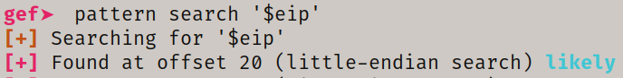

checksec
vmmap <option - filter> virtual memory map
xinfo $pc info regarding location at arg
dereference (aliases: dps, telescope) dereference to a location in arg to show its value
dps -l 50 $sp will give 10 lines if not specified
pattern create 40 will create BOF pattern and save as local var
pattern search '$eip' will search for pattern in memory and dereference
